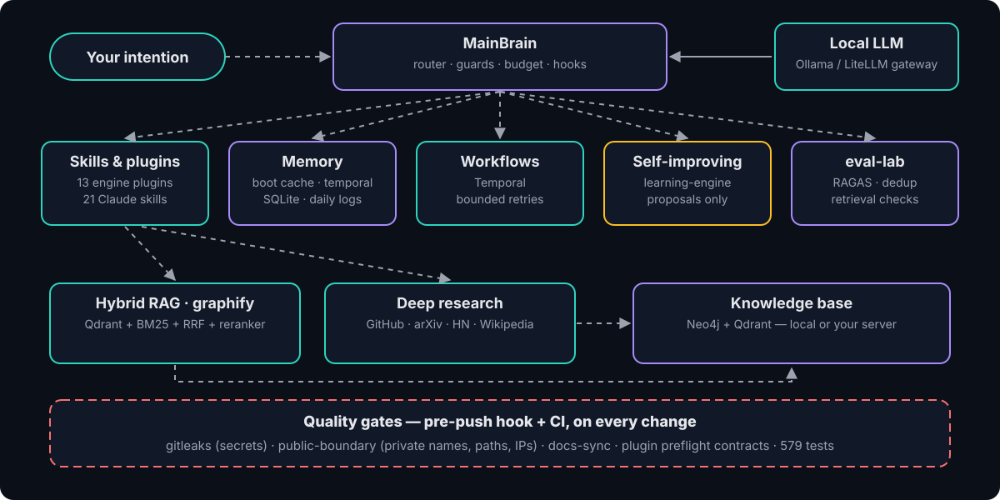
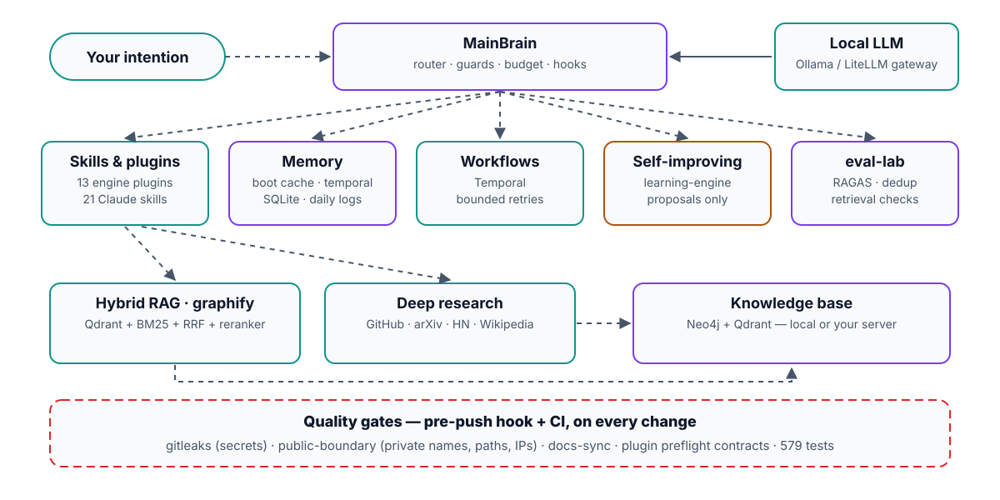

TricorderKit is an open-source, local-first knowledge OS for AI agents. Every intention becomes a traceable workflow, every claim is measured, and every push goes through gates that stop secrets and private names before they leave your machine.
Every figure comes from a selftest shipped in the repository (re-run on 28 October 2026). No inflated metrics.
A private name slips into a note. The pre-push hook blocks it before anything leaves the machine — and because CI logs are public, it reports a digest, never the name. Real output, recorded with the repository's own hook.

Hybrid RAG (graphify), deep research, workflows on Temporal, memory boot, evaluation lab, security audit — one marketplace.
Model routing and budgets, context compression, agent-config audit, skill evals, development protocol — no data, no Docker.
Ollama, Neo4j and Qdrant on your machine — or on a server you own. Cloud models are optional, never required.
Offline benchmarks with selftests, 579 tests in CI, live badges instead of static claims.
The learning loop only writes proposals. Promotion needs green tests and a human review.
gitleaks, a private-name boundary gate, docs-sync and plugin contracts — pre-push hook and CI.


Not a demo. TricorderKit runs every day behind a private knowledge-base project. The public engine stays generic; the domain lives in a private linked repository.
The anti-leak gate comes from a real incident. In October 2026, content from that private project slipped into the public repository through a whitelist that exempted whole folders. We fixed the cause, neutralised the engine, and restarted the public history from a clean commit.
Gates find bugs in the gates. Recording the demo above revealed that the pre-push hook was not executable on Linux and macOS. Fixed in the same release.
Inside Claude Code:
/plugin marketplace add GeekFamilyCorp/TricorderKitThen pick a plugin, for example /plugin install graphify@tricorderkit. The full local engine is one git clone away — see the quick start.